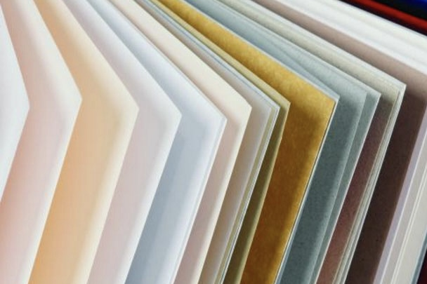

Печать документов
Печать документов в типографии - важный элемент профессиональной коммуникации и маркетинга.
Она позволяет создавать высококачественные и привлекательные документы, которые могут
быть использованы для различных целей и оставить хорошее впечатление среди получателей.
Печать документов в "Photo factory" это:
- Профессиональный внешний вид. Качественная печать и использование высококачественных
материалов придают документам элегантный вид
- Удобство использования. Напечатанные документы легче читать и использовать, особенно если
они содержат большое количество информации или сложные графические элементы.
Они также могут быть удобно распределены
- Больше возможностей для креатива. Печать в типографии позволяет использовать различные
цвета, шрифты и текстуры, что открывает больше возможностей для создания уникальных документов.
- Высокое качество печати. Типография обладает специализированным оборудованием и опытными
специалистами, что позволяет достичь высокого качества печати. Это важно, особенно если
документы предназначены для важных деловых или рекламных целей
- Долговечность. Печатные документы защищенными от повреждений. Они могут быть ламинированы,
фальцованы или переплетены, чтобы увеличить их стойкость к износу и сохранить их внешний вид
на протяжении длительного времени
Виды бумаги
| Размер |
А3 (297х420 мм) |
А4 (210x297 мм) |
А5 (148x210 мм) |
|
|
|
| Формат и цвет |
Чёрно-белая односторонняя |
Чёрно-белая двусторонняя |
Цветная односторонняя |
Цветная двусторонняя |
Комбинированная |
|
| Бумага |
Офсетная |
Газетная |
Самокопирующаяся |
Мелованная |
Дизайнерская |
Крафтовая |
Особенности разных видов бумаги

- Офсетная
- Высокое содержание целлюлозы
- Белый цвет
- Машинная гладкость
- Матовая поверхность
- Отсутствие бликов на свету
- Газетная
- Тонкая
- Серовато-жёлтый оттенок
- Предназначена для продукции, рассчитанной на краткосрочное использование
- Легко стираемая поверхность
- Самокопирующаяся
- Многослойная
- Тонкая
- Имеет специальное химическое покрытие, с помощью которого информация с одного листа копируется на другой
- Мелованная
- Имеет тончайший слой каолина, мела и связующих веществ
- Может быть матовой или глянцевой
- Из нее изготавливают рекламно-информационные буклеты, листовки, обложки брошюр, плакаты, журналы
- Дизайнерская
- Используется для реализации эксклюзивных художественных и дизайнерских проектов
- Наиболее популярные виды:
- Эфалин (материал с фактурной поверхностью, который используется для отделки лицевой стороны книжных обложек, изготовления пакетов)
- Тач кавер (плотная бумага представительского класса с уникальным тактильным эффектом, из такого материала изготавливают визитки и открытки)
- Маджестик (прочные металлизованные листы, предназначенные для изготовления высокопрочной полиграфической продукции)
- Евроколор (дизайнерский цветной картон, украшаемый тиснением, из него изготавливают эксклюзивные визитки, папки, подарочную упаковку)
- Крафтовая
- Бурая или отбелённая поверхность
- Используется для создания упаковки - конвертов и пакетов
Вернуться в начало